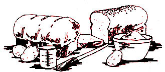

In the "good old days" on the farm, all the bread was made at home for two reasons: First, it was cheaper (it still is...the cost today is about 10 cents per loaf) and second, rural folks couldn't go to the store every few days for a fresh supply. Today many people would add a third motive for doing their own baking: Commercial bread tends to become monotonous, and the homemade loaf is considered a special treat.
If you're a home baker yourself, you may want to try a simple, economical leavening made from potato water. Once you've established the starter you can maintain it indefinitely without further addition of yeast, and it's available whenever the whim strikes you to get up to your elbows in dough.
Here are the nine steps farm housewives use to make bread by this old-fashioned method.
[1] To establish the starter, save the water from boiled potatoes...or better, cook a potato and mash it in its own liquid. Pour the water into the container you plan to use permanently (a quart jar is good).
Next, dissolve a package of dry yeast in a quarter of a cup of warm water and pour the solution into the potato liquid. Add two tablespoons of sugar and fill the jar with warm water, leaving an inch or more of empty space at the top. (Remember that warmth causes the yeast to work rapidly, but too high a temperature will kill the organisms.) Stir the mixture.
[2] Let the starter stand for about eight hours.
[3] Just before bedtime, mix your sponge: Pour the starter into a deep pan or pail, leaving a little (a layer about 1-1/2" deep) in the bottom of your quart jar. Add two cups of water to the mixture in the pan and stir in flour to form a thin batter about the right consistency for pancakes. Cover the sponge and let it stand all night.
Before you put away the starter that remains in the quart jar, add a tablespoon of salt (as preservative) and two tablespoons of sugar (as food for the yeast). Keep the container in a cupboard , not in the refrigerator.
[4] It's a good idea to mix your bread early in the morning so that it'll have plenty of time to rise during the day.
Four loaves of bread require two and a half pounds of flour. Some types make better bread than others...each farm wife experimented until she found a brand that worked well for her. Whatever kind you use, buy it when you find it on sale to keep costs to a minimum.
Like the old-time housewife, you can mix your dough in a dishpan. After pouring the flour into the container, add a rounded tablespoon or more of lard for each loaf followed by two tablespoons of sugar and one of salt (for four loaves). Then wash your hands thoroughly and use your fingers and thumb to rub the lard into some of the flour until the fat is in flakes.
Make a rounded, bowl-shaped impression in the powder and pour the sponge into the hollow. Stir the flour mixture into the sponge, pulling the flour in from the edges of the pan and trying to keep the sponge away from the sides and bottom as long as possible to prevent sticking.
As the mixture begins to stiffen, dust your hands lightly with flour and start mixing with a kneading motion. (Pick up the edges of the paste, fold them toward the middle and press them into the mass with the heels of the hands.) A light flouring on the sides and bottom of the pan will relieve the stickiness, and dough that clings to the bowl and your fingers can be rubbed off with flour and kneaded into the main mass.
In the past, mothers taught their daughters the desirable consistency for bread dough. Those of you who missed out on that kind of instruction should bear in mind that the final ball must be just as soft as possible and yet smooth on the outside. A mixture that's too soft will be sticky and won't form into a sleek glob.
Your efforts toward shaping up a smooth ball of dough will be helped if you continue to dust the mass lightly with flour as you work. Until the ingredients are thoroughly blended they'll stick to the pan and yet feel stiff to the hands. In the course of the mixing add warm water as needed-about half a cup a at a time-by making a small basin in the dough to receive the liquid. Then fold the edges of the mound into the water from all sides. Avoid getting the outside of the ball wet, as this will cause further sticking.
Although much has been said about the importance of kneading for long periods, farm wives made very good bread without timing the process. The goal was-and is-to mix the ingredients well and to coax the dough into a soft, smooth ball. When you begin to feel air in the mass, it's approaching the right consistency.
After the paste has reached the desired state, turn the round over-the smoothest part will be underneath-grease it with cooking oil or melted lard to prevent drying and cover the dishpan with a clean kitchen towel. Let the dough rise until it's two or three times its original size. This is likely to take about three hours...perhaps longer.
[5] When the dough has risen, punch it down by kneading it briefly to restore it to approximately its original mass. Again form it into a smooth ball and grease the surface. Cover the bread-to-be and let it rise a second time for about two hours or until it's once more two or three times its original size.
[6] Punch the dough down again, shape it into four smooth loaves and grease the outsides. Place the bread in baking pans...two 8" X 10" X 2" containers, with two loaves in each, will be about right. Let the dough rise as before.
[7] If you want to make rolls or cinnamon buns, reserve as much dough as would go into one loaf of bread and knead in two tablespoons of melted lard and two tablespoons of sugar.
For rolls, shape the paste into balls about the size of a small egg and place them in a pan to rise. To make cinnamon buns, spread the dough half an inch thick with a rolling pin and sprinkle it generously with sugar, cinnamon, butter or margarine. Curl the sheet up like a jelly roll and cut it into slices one-half to three-quarters of an inch thick. Place the little spirals in a greased pan to rise.
[8] When the bread dough is quite light, bake it in an oven preheated to 350° for about an hour (20 minutes at 375° in the case of rolls). Adjust the heat as the baking proceeds...reduce the temperature if the crust seems to be browning too fast, raise it if you see that the loaves won't be well browned at the end of an hour.
[9] When you remove the loaves or rolls from the oven, grease them with butter or margarine, cover them with a dish towel and let them stand until they're cool. Then store them in a bread bin with a tight cover, or in plastic bags.
When you want to bake again, fill the starter jar with potato water, add two tablespoons of sugar, let the mixture stand for eight hours and proceed as before. That's the advantage of homemade leavening: It's always on hand, ready to serve you whenever you decide to spend a satisfying day with warmly bulging dough and the fragrance of newly baked bread.
|
 |
|
|